사내 SaaS 라이선스 신청 · 승인 · 할당 · 반납 · 회수
| 화면 ID | 화면명 / 경로 | 관련 요구사항 |
|---|---|---|
| SCR-SIGNUP-001 | 회원가입 /signup | REQ-FUNC-001 |
| SCR-AUTH-001 | 로그인 /login | REQ-FUNC-002 |
| SCR-COMMON-001 | 공통 헤더·사이드바 / 인증 후 전체 | REQ-FUNC-003 |
| SCR-COMMON-002 | 회원 정보 수정 모달 / 인증 후 전체 | REQ-FUNC-020 |
| SCR-LIC-001 | 라이선스 탐색 /licenses | REQ-FUNC-004 |
| SCR-LIC-002 | 사용 신청 모달 /licenses 내부 | REQ-FUNC-005 |
| SCR-REQ-001 | 내 신청 /requests | REQ-FUNC-006 |
| SCR-REQ-002 | 신청 취소 확인 /requests 내부 | REQ-FUNC-007 |
| SCR-MYLIC-001 | 내 라이선스 /my-licenses | REQ-FUNC-008 |
| SCR-MYLIC-002 | 반납 확인 /my-licenses 내부 | REQ-FUNC-009 |
| SCR-ADM-001 | 대시보드 /admin | REQ-FUNC-010 |
| SCR-ADM-002 | 승인 대기 /admin/requests | REQ-FUNC-011 |
| SCR-ADM-007 | 승인 모달 /admin/requests 내부 | REQ-FUNC-012 |
| SCR-ADM-008 | 반려 모달 /admin/requests 내부 | REQ-FUNC-013 |
| SCR-ADM-004 | 처리 이력 /admin/requests 탭 | REQ-FUNC-014 |
| SCR-ADM-003 | 라이선스 관리 /admin/licenses | REQ-FUNC-015 |
| SCR-ADM-005 | 등록 모달 /admin/licenses 내부 / 수정 모달 /admin/licenses 내부 | REQ-FUNC-016, REQ-FUNC-017 |
| SCR-ADM-006 | 라이선스 사용자 관리 모달 /admin/licenses 내부 | REQ-FUNC-018 |
| SCR-ADM-010 | 권한 승인 기간 수정 모달 /admin/licenses 내부 | REQ-FUNC-021 |
| SCR-ADM-009 | 회수 모달 /admin/licenses 내부 | REQ-FUNC-019 |
수정 이력: 2026-09-08 v1.2 · 현재 구현 및 기존 요구사항 정의서 기준 작성.
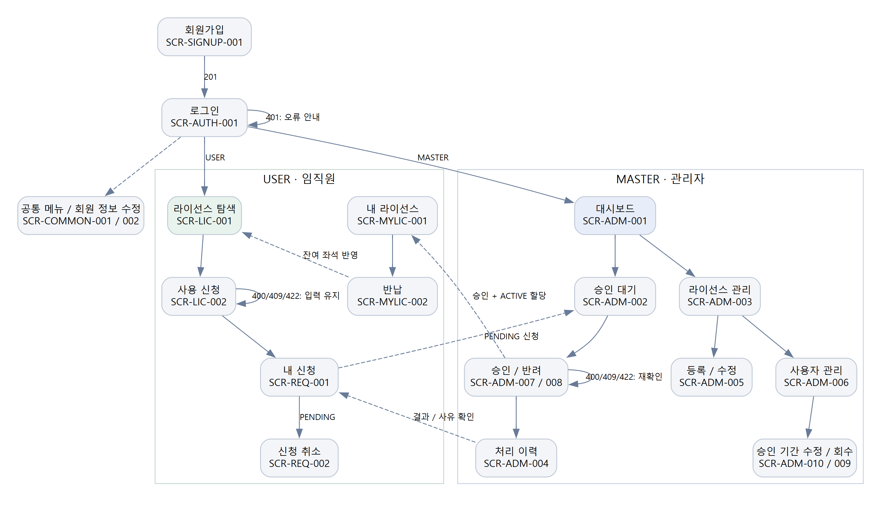
각 화면은 ① 기본 정보 ② 번호가 붙은 실제 화면 ③ 사용자 흐름 ④ 디스크립션 ⑤ 예외 처리 및 정책으로 구성한다. 캡처 번호와 설명 표 NO는 1:1 대응한다. 등록·수정은 같은 SCR-ADM-005의 두 상태이다.
캡처는 현재 Vue/FastAPI 코드를 별도 SQLite 시연 DB와 기본 seed 데이터로 실행한 화면이다. 운영 데이터 캡처나 PostgreSQL 동시성 검증 결과가 아니다. 데이터 모델의 기준 DB는 PostgreSQL이다.
화면 이미지에는 설명용 번호만 덧붙였다. 정상 화면은 1440 × 1000 뷰포트에서 전체 문서를 촬영하고, 모달은 표시 영역을 촬영했다. 이미지 안 인명·이메일·좌석 수는 시연 데이터다.
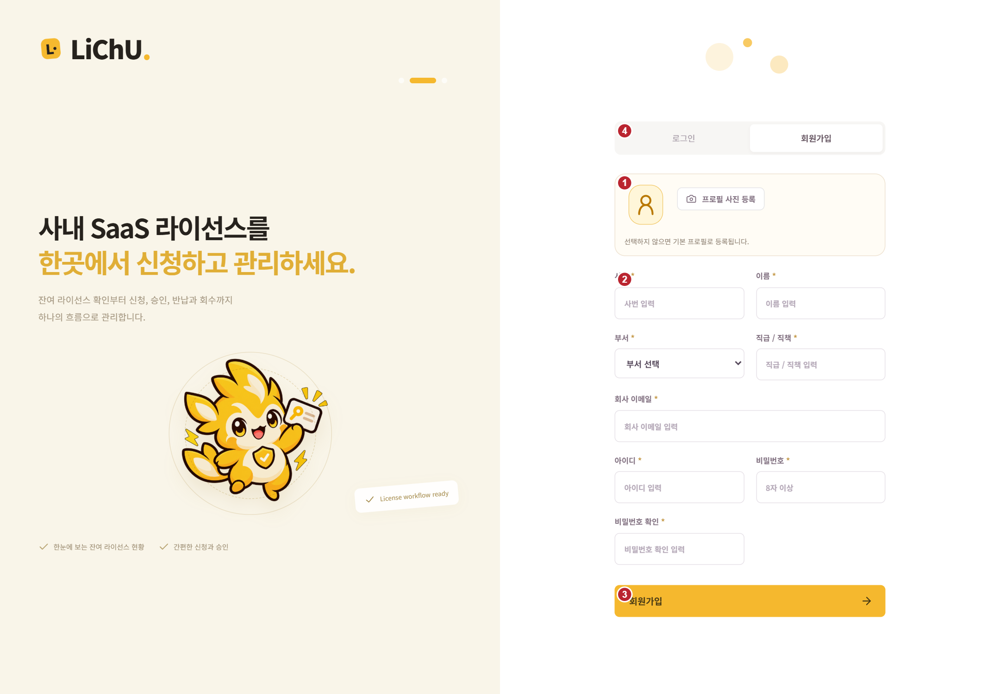
실제 실행 화면 · 빨간 번호는 다음 페이지의 디스크립션 NO와 대응
| NO | UI 요소명 | 관련 요구사항 ID | 인터랙션 및 로직 / 이동 | 호출 API |
|---|---|---|---|---|
| 1 | 프로필 사진 | REQ-FUNC-001 | 선택. JPEG/PNG/WEBP 파일을 Data URL로 변환한다. 선택하지 않으면 기본 이미지. 별도 파일 크기 제한은 없음. 이동: 현 화면 | - |
| 2 | 가입 정보 | REQ-FUNC-001 | 사번·이름·부서·직급/직책·회사 이메일·아이디·비밀번호·확인 필수. 부서 선택(기본 0은 유효 ID 아님). 아이디 4자 이상, 비밀번호 8자 이상 / UTF-8 72바이트 이하 및 확인 일치. 이동: 현 화면 | GET /api/departments |
| 3 | 회원가입 | REQ-FUNC-001 | 버튼 클릭 → USER 계정 생성. 사번/아이디/이메일 중복과 부서를 서버 검사. 처리 중 중복 제출 방지. 이동: SCR-AUTH-001 | POST /api/auth/signup |
| 4 | 로그인 탭 | REQ-FUNC-001, REQ-FUNC-002 | 가입하지 않고 로그인으로 전환한다. 이동: SCR-AUTH-001 | - |
| 상태 | 처리 |
|---|---|
| 정상 | SCR-AUTH-001 → 회원가입 → 부서 목록 로딩 → 필수정보 입력 → 저장 성공(201) → SCR-AUTH-001?registered=1. 실패 시 입력과 오류 표시 유지. |
| 로딩 / 중복 클릭 | 목록은 로딩 상태를 표시. 저장 처리 중 버튼을 비활성화한다. 필수 입력은 브라우저 기본 검증과 서버 검증을 함께 사용한다. |
| 빈 화면 | 목록의 빈 상태는 위 화면별 정책에 따른다. 입력 모달에서는 빈 데이터 대신 필수 입력 안내를 사용한다. |
| 네트워크 / 500 | 오류 문구를 표시하고 사용자가 재시도한다. 변경 API 실패 후에는 먼저 목록에서 반영 여부를 확인한다. |
| 400 / 401 / 403 / 404 / 409 / 422 | 화면별 적용 코드는 위 정책 및 API 명세 참조. 입력 형식은 422, 잘못된 상태 전이는 400으로 구분한다. |
AC-01 동일 사번·아이디·이메일로 두 계정을 만들 수 없다.
AC-02 비밀번호 확인이 다르면 저장되지 않는다.
AC-03 정상 가입은 USER로 생성되고 성공 안내가 있는 로그인 화면으로 이동한다.
departments.id/name; users.employee_no/name/department_id/job_title/email/username/password_hash/profile_image/role
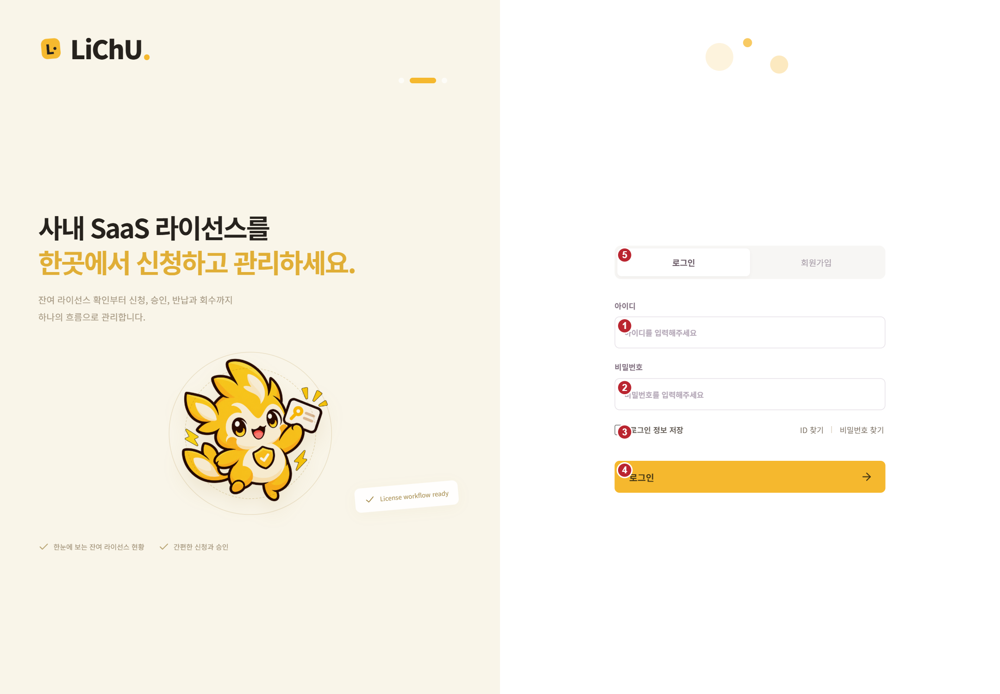
실제 실행 화면 · 빨간 번호는 다음 페이지의 디스크립션 NO와 대응
| NO | UI 요소명 | 관련 요구사항 ID | 인터랙션 및 로직 / 이동 | 호출 API |
|---|---|---|---|---|
| 1 | 아이디 | REQ-FUNC-002 | 필수. Placeholder: 아이디를 입력해주세요. 로그인은 1~100자; 가입 시 최소 4자. 이동: 현 화면 | - |
| 2 | 비밀번호 | REQ-FUNC-002 | 필수, 마스킹. Placeholder: 비밀번호를 입력해주세요. 이동: 현 화면 | - |
| 3 | 로그인 정보 저장 / 찾기 | REQ-FUNC-002 | 체크 시 아이디만 localStorage에 저장. ID/비밀번호 찾기는 IT 자산관리팀 문의 안내 모달을 연다. 비밀번호 재설정 API는 없음. 이동: 안내 모달 → 현 화면 | - |
| 4 | 로그인 | REQ-FUNC-002 | 클릭 → 자격 검증 → 토큰 저장 → 현재 사용자 조회 → 역할별 이동. 처리 중 비활성화. 이동: SCR-LIC-001 / SCR-ADM-001 | POST /api/auth/login GET /api/auth/me |
| 5 | 회원가입 탭 | REQ-FUNC-001, REQ-FUNC-002 | 회원가입 화면으로 전환한다. 이동: SCR-SIGNUP-001 | GET /api/departments |
| 상태 | 처리 |
|---|---|
| 정상 | 진입 → 아이디·비밀번호 입력 → 로그인 → USER: SCR-LIC-001 / MASTER: SCR-ADM-001. 인증 실패(401)는 화면 잔류. 회원가입 탭 → SCR-SIGNUP-001. |
| 로딩 / 중복 클릭 | 목록은 로딩 상태를 표시. 저장 처리 중 버튼을 비활성화한다. 필수 입력은 브라우저 기본 검증과 서버 검증을 함께 사용한다. |
| 빈 화면 | 목록의 빈 상태는 위 화면별 정책에 따른다. 입력 모달에서는 빈 데이터 대신 필수 입력 안내를 사용한다. |
| 네트워크 / 500 | 오류 문구를 표시하고 사용자가 재시도한다. 변경 API 실패 후에는 먼저 목록에서 반영 여부를 확인한다. |
| 400 / 401 / 403 / 404 / 409 / 422 | 화면별 적용 코드는 위 정책 및 API 명세 참조. 입력 형식은 422, 잘못된 상태 전이는 400으로 구분한다. |
AC-01 빈 아이디 또는 비밀번호는 제출되지 않는다.
AC-02 올바른 USER와 MASTER는 각각 탐색과 대시보드로 이동한다.
AC-03 로그인 정보 저장을 선택해도 비밀번호는 저장하지 않는다.
users.username/password_hash/role; users.department_id → departments.id
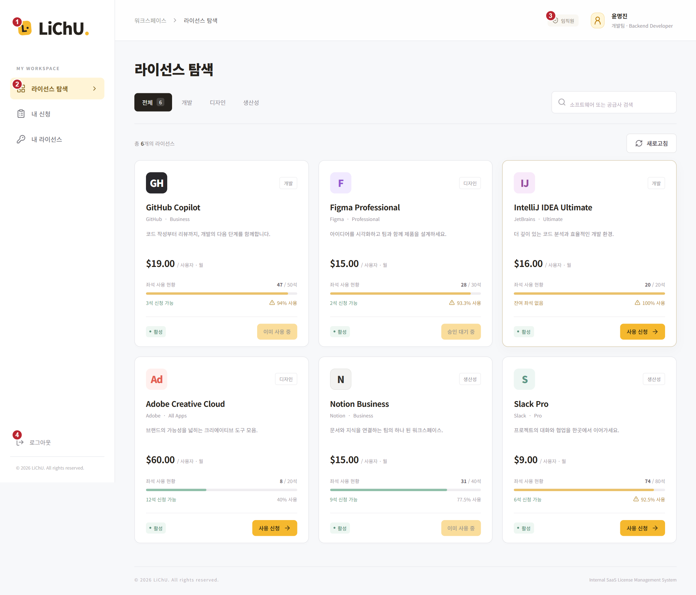
실제 실행 화면 · 빨간 번호는 다음 페이지의 디스크립션 NO와 대응
| NO | UI 요소명 | 관련 요구사항 ID | 인터랙션 및 로직 / 이동 | 호출 API |
|---|---|---|---|---|
| 1 | 상단 로고 | REQ-FUNC-003 | public/logo.png를 표시. USER는 탐색, MASTER는 대시보드로 이동. 이동: SCR-LIC-001 / SCR-ADM-001 | - |
| 2 | 역할별 메뉴 | REQ-FUNC-003 | USER: 탐색·내 신청·내 라이선스. MASTER: 대시보드·신청 관리·라이선스 관리. 현재 메뉴 강조. 이동: 선택한 화면 | 해당 화면 조회 API |
| 3 | 회원 정보 | REQ-FUNC-003, REQ-FUNC-020 | 이름·부서·직급·역할·프로필 표시. 클릭하면 수정 모달. 이동: SCR-COMMON-002 | GET /api/auth/me |
| 4 | 로그아웃 | REQ-FUNC-003 | 브라우저 토큰과 사용자 상태를 비운다. 로그아웃 API는 없음. 이동: SCR-AUTH-001 | - |
| 상태 | 처리 |
|---|---|
| 정상 | 로그인 → 사용자 정보 조회 → 역할별 메뉴 표시. 메뉴 클릭 → 해당 화면 / 회원 정보 클릭 → SCR-COMMON-002 / 로그아웃 → SCR-AUTH-001. |
| 로딩 / 중복 클릭 | 목록은 로딩 상태를 표시. 저장 처리 중 버튼을 비활성화한다. 필수 입력은 브라우저 기본 검증과 서버 검증을 함께 사용한다. |
| 빈 화면 | 목록의 빈 상태는 위 화면별 정책에 따른다. 입력 모달에서는 빈 데이터 대신 필수 입력 안내를 사용한다. |
| 네트워크 / 500 | 오류 문구를 표시하고 사용자가 재시도한다. 변경 API 실패 후에는 먼저 목록에서 반영 여부를 확인한다. |
| 400 / 401 / 403 / 404 / 409 / 422 | 화면별 적용 코드는 위 정책 및 API 명세 참조. 입력 형식은 422, 잘못된 상태 전이는 400으로 구분한다. |
AC-01 USER에게 관리자 메뉴가 나타나지 않는다.
AC-02 로그아웃 후 보호 화면에는 재로그인이 필요하다.
AC-03 로고 및 기본 프로필 이미지가 로딩된다.
users.name/job_title/role/department_id; departments.name (로그아웃은 DB 변경 없음)
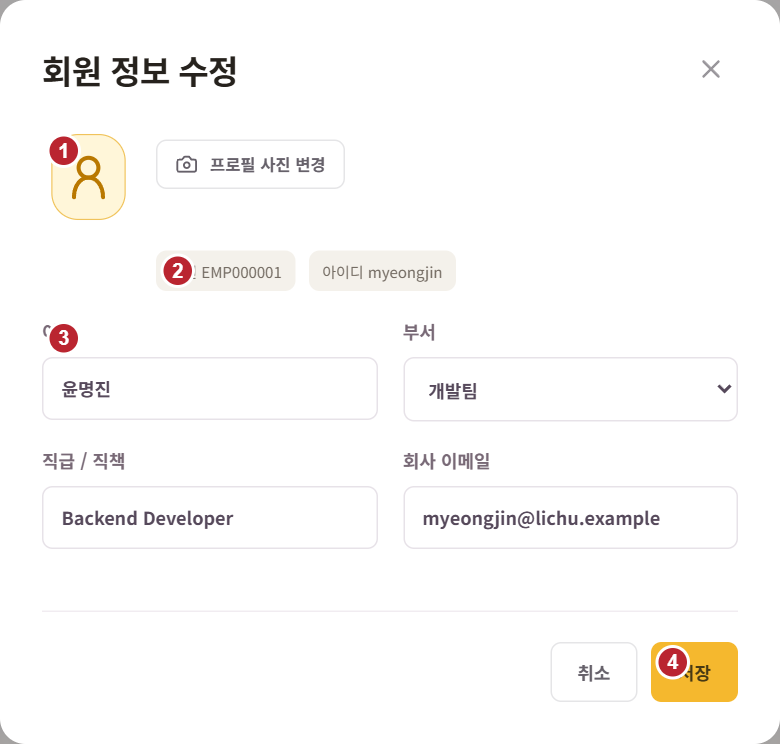
실제 실행 화면 · 빨간 번호는 다음 페이지의 디스크립션 NO와 대응
| NO | UI 요소명 | 관련 요구사항 ID | 인터랙션 및 로직 / 이동 | 호출 API |
|---|---|---|---|---|
| 1 | 프로필 사진 변경 | REQ-FUNC-020 | JPEG/PNG/WEBP 선택. 등록된 사진은 기본 프로필 사용으로 제거 가능. profile_image=null로 저장. 이동: 현 모달 | - |
| 2 | 사번 / 아이디 | REQ-FUNC-020 | 읽기 전용으로 표시. 수정 요청 본문에서 제외한다. 이동: 현 모달 | - |
| 3 | 이름 / 부서 / 직급 / 이메일 | REQ-FUNC-020 | 필수. 이름·직급 1~100자, email 형식/최대255자, 존재하는 부서. 이메일은 소문자로 정규화. 이동: 현 모달 | GET /api/departments |
| 4 | 저장 | REQ-FUNC-020 | 정보 저장 후 사용자 정보 재조회. 처리 중 저장·취소 비활성화. 이동: SCR-COMMON-001 | PATCH /api/auth/me GET /api/auth/me |
| 상태 | 처리 |
|---|---|
| 정상 | SCR-COMMON-001 회원 정보 클릭 → 현 정보 및 부서 목록 → 편집 → 저장(200) → GET /auth/me → 헤더 갱신 및 모달 닫힘. 취소는 저장하지 않는다. |
| 로딩 / 중복 클릭 | 목록은 로딩 상태를 표시. 저장 처리 중 버튼을 비활성화한다. 필수 입력은 브라우저 기본 검증과 서버 검증을 함께 사용한다. |
| 빈 화면 | 목록의 빈 상태는 위 화면별 정책에 따른다. 입력 모달에서는 빈 데이터 대신 필수 입력 안내를 사용한다. |
| 네트워크 / 500 | 오류 문구를 표시하고 사용자가 재시도한다. 변경 API 실패 후에는 먼저 목록에서 반영 여부를 확인한다. |
| 400 / 401 / 403 / 404 / 409 / 422 | 화면별 적용 코드는 위 정책 및 API 명세 참조. 입력 형식은 422, 잘못된 상태 전이는 400으로 구분한다. |
AC-01 수정한 이름과 부서가 저장 후 헤더에 표시된다.
AC-02 다른 직원 이메일과 중복되면 저장되지 않는다.
AC-03 사번·아이디는 수정할 수 없다.
users.name/department_id/job_title/email/profile_image/updated_at; departments.id
실제 실행 화면 · 빨간 번호는 다음 페이지의 디스크립션 NO와 대응
| NO | UI 요소명 | 관련 요구사항 ID | 인터랙션 및 로직 / 이동 | 호출 API |
|---|---|---|---|---|
| 1 | 카테고리 탭 | REQ-FUNC-004 | 전체 또는 선택 분류만 표시. 현재 화면은 서버 목록을 받은 후 클라이언트 필터링. 이동: 현 화면 | GET /api/licenses (최초/갱신) |
| 2 | 검색 | REQ-FUNC-004 | Placeholder: 소프트웨어 또는 공급사 검색. 이름·공급사 대소문자 구분 없는 부분 검색. UI 입력마다 API 호출하지 않음. 이동: 현 화면 | - |
| 3 | 라이선스 카드 / 사용 신청 | REQ-FUNC-004, REQ-FUNC-005 | 이름·플랜·분류·설명·단가·주기·좌석·사용률·상태 표시. ACTIVE_ASSIGNMENT/PENDING_REQUEST/INACTIVE는 신청 불가. 잔여 0석은 신청 가능. 이동: SCR-LIC-002 | GET /api/licenses/{license_id} |
| 4 | 새로고침 | REQ-FUNC-004 | 최신 목록을 재조회. 창 복귀 및 보이는 상태에서 30초 주기 재조회도 적용. 이동: 현 화면 | GET /api/licenses |
| 상태 | 처리 |
|---|---|
| 정상 | USER 로그인 → 전체 라이선스 조회 → 검색/분류 → 사용 신청 → SCR-LIC-002. 빈 결과는 현 화면 안내. 기존 사용·대기·비활성은 신청 제한. |
| 로딩 / 중복 클릭 | 목록은 로딩 상태를 표시. 저장 처리 중 버튼을 비활성화한다. 필수 입력은 브라우저 기본 검증과 서버 검증을 함께 사용한다. |
| 빈 화면 | 목록의 빈 상태는 위 화면별 정책에 따른다. 입력 모달에서는 빈 데이터 대신 필수 입력 안내를 사용한다. |
| 네트워크 / 500 | 오류 문구를 표시하고 사용자가 재시도한다. 변경 API 실패 후에는 먼저 목록에서 반영 여부를 확인한다. |
| 400 / 401 / 403 / 404 / 409 / 422 | 화면별 적용 코드는 위 정책 및 API 명세 참조. 입력 형식은 422, 잘못된 상태 전이는 400으로 구분한다. |
AC-01 이름과 공급사 검색 및 분류가 함께 적용된다.
AC-02 잔여 0석 카드에서도 신규 신청 모달을 열 수 있다.
AC-03 이미 사용 중 또는 승인 대기인 라이선스는 신청할 수 없다.
licenses 전체 정보; license_assignments.status=ACTIVE 집계; license_requests.status=PENDING
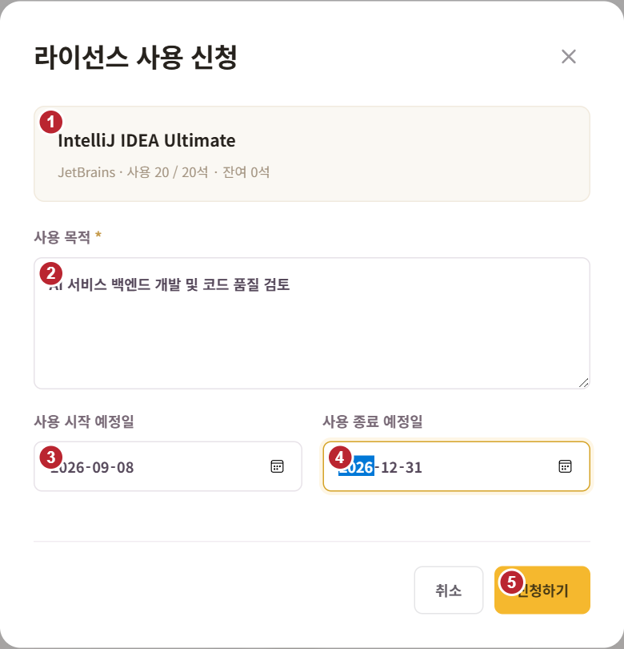
실제 실행 화면 · 빨간 번호는 다음 페이지의 디스크립션 NO와 대응
| NO | UI 요소명 | 관련 요구사항 ID | 인터랙션 및 로직 / 이동 | 호출 API |
|---|---|---|---|---|
| 1 | 라이선스 요약 | REQ-FUNC-005 | 선택 SaaS 및 총/사용/잔여 좌석을 상세 API로 확인한다. 이동: 현 모달 | GET /api/licenses/{license_id} |
| 2 | 사용 목적 | REQ-FUNC-005 | 필수 1~4000자, 앞뒤 공백 제거. Placeholder: 어떤 업무나 프로젝트에 필요한지 알려주세요. 이동: 현 모달 | - |
| 3 | 사용 시작 예정일 | REQ-FUNC-005 | 필수 날짜. 모달의 초기 시작일은 당일. 신청 기간의 시작일. 이동: 현 모달 | - |
| 4 | 사용 종료 예정일 | REQ-FUNC-005 | 필수 날짜. 시작일 이상이어야 함. 역전 기간은 화면 및 서버 검증. 이동: 현 모달 | - |
| 5 | 신청하기 | REQ-FUNC-005 | PENDING 생성. 잔여 0석도 허용. 기존 ACTIVE 할당/PENDING 신청은 서버가 409 거부. 이동: SCR-LIC-001 | POST /api/license-requests |
| 상태 | 처리 |
|---|---|
| 정상 | SCR-LIC-001 사용 신청 → 상세 최신화 → 목적·기간 입력 → POST 성공(201) → 모달 닫힘·탐색 갱신. 내 신청 메뉴에서 SCR-REQ-001 확인. |
| 로딩 / 중복 클릭 | 목록은 로딩 상태를 표시. 저장 처리 중 버튼을 비활성화한다. 필수 입력은 브라우저 기본 검증과 서버 검증을 함께 사용한다. |
| 빈 화면 | 목록의 빈 상태는 위 화면별 정책에 따른다. 입력 모달에서는 빈 데이터 대신 필수 입력 안내를 사용한다. |
| 네트워크 / 500 | 오류 문구를 표시하고 사용자가 재시도한다. 변경 API 실패 후에는 먼저 목록에서 반영 여부를 확인한다. |
| 400 / 401 / 403 / 404 / 409 / 422 | 화면별 적용 코드는 위 정책 및 API 명세 참조. 입력 형식은 422, 잘못된 상태 전이는 400으로 구분한다. |
AC-01 잔여 0석에서도 PENDING 신청이 저장된다.
AC-02 동일 사용자·라이선스의 PENDING은 한 건만 존재한다.
AC-03 시작일이 종료일 이후면 제출되지 않는다.
license_requests.user_id/license_id/reason/start_date/end_date/status/created_at; licenses; license_assignments
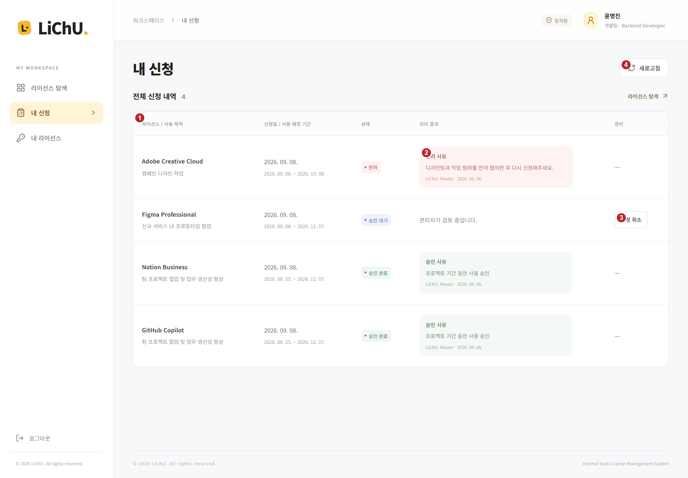
실제 실행 화면 · 빨간 번호는 다음 페이지의 디스크립션 NO와 대응
| NO | UI 요소명 | 관련 요구사항 ID | 인터랙션 및 로직 / 이동 | 호출 API |
|---|---|---|---|---|
| 1 | 신청 내역 표 | REQ-FUNC-006 | SaaS·목적·신청일·예정 기간·상태 표시. 본인 데이터만 서버 반환. 10건 단위 클라이언트 페이지 이동. 이동: 현 화면 | GET /api/license-requests/me |
| 2 | 처리 결과 / 반려 사유 | REQ-FUNC-006 | 승인/반려 사유와 처리자·처리일 표시. 반려는 강조. PENDING은 검토 중, CANCELED는 취소됨. 이동: 현 화면 | - |
| 3 | 신청 취소 | REQ-FUNC-007 | PENDING 행에서만 표시. 클릭 시 확인 모달. 이동: SCR-REQ-002 | - |
| 4 | 새로고침 | REQ-FUNC-006 | 목록 재조회. 창 복귀·30초 자동 갱신. 이동: 현 화면 | GET /api/license-requests/me |
| 상태 | 처리 |
|---|---|
| 정상 | 내 신청 메뉴 → 본인 신청 목록 → 상태·처리 사유 확인. 대기 행의 신청 취소 → SCR-REQ-002. 라이선스 탐색 링크 → SCR-LIC-001. |
| 로딩 / 중복 클릭 | 목록은 로딩 상태를 표시. 저장 처리 중 버튼을 비활성화한다. 필수 입력은 브라우저 기본 검증과 서버 검증을 함께 사용한다. |
| 빈 화면 | 목록의 빈 상태는 위 화면별 정책에 따른다. 입력 모달에서는 빈 데이터 대신 필수 입력 안내를 사용한다. |
| 네트워크 / 500 | 오류 문구를 표시하고 사용자가 재시도한다. 변경 API 실패 후에는 먼저 목록에서 반영 여부를 확인한다. |
| 400 / 401 / 403 / 404 / 409 / 422 | 화면별 적용 코드는 위 정책 및 API 명세 참조. 입력 형식은 422, 잘못된 상태 전이는 400으로 구분한다. |
AC-01 다른 직원 신청이 목록에 나타나지 않는다.
AC-02 반려 사유·처리자·처리일이 확인된다.
AC-03 PENDING 외 상태에는 취소 버튼이 없다.
license_requests 상태/기간/목적/decision_reason/processed_by/processed_at; users; licenses
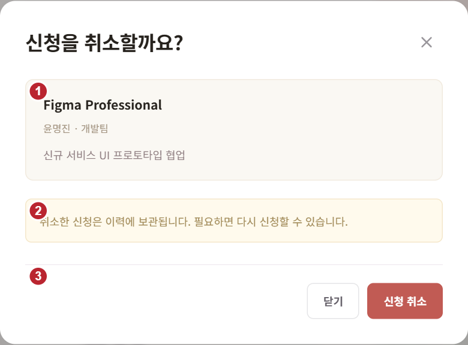
실제 실행 화면 · 빨간 번호는 다음 페이지의 디스크립션 NO와 대응
| NO | UI 요소명 | 관련 요구사항 ID | 인터랙션 및 로직 / 이동 | 호출 API |
|---|---|---|---|---|
| 1 | 대상 신청 요약 | REQ-FUNC-007 | 라이선스·신청자·부서·목적을 확인한다. 이동: 현 모달 | - |
| 2 | 취소 안내 | REQ-FUNC-007 | 취소한 신청은 이력으로 보존하며 필요 시 새 신청 가능. 이동: 현 모달 | - |
| 3 | 닫기 / 신청 취소 | REQ-FUNC-007 | 닫기는 API 호출 없음. 취소 확정은 본인의 PENDING만 CANCELED로 변경하고 canceled_at 저장. 이동: SCR-REQ-001 | POST /api/license-requests/{request_id}/cancel |
| 상태 | 처리 |
|---|---|
| 정상 | SCR-REQ-001 대기 신청 선택 → 대상 확인 → 신청 취소(200) → 모달 닫힘 및 내 신청 재조회. 닫기는 상태 유지. |
| 로딩 / 중복 클릭 | 목록은 로딩 상태를 표시. 저장 처리 중 버튼을 비활성화한다. 필수 입력은 브라우저 기본 검증과 서버 검증을 함께 사용한다. |
| 빈 화면 | 목록의 빈 상태는 위 화면별 정책에 따른다. 입력 모달에서는 빈 데이터 대신 필수 입력 안내를 사용한다. |
| 네트워크 / 500 | 오류 문구를 표시하고 사용자가 재시도한다. 변경 API 실패 후에는 먼저 목록에서 반영 여부를 확인한다. |
| 400 / 401 / 403 / 404 / 409 / 422 | 화면별 적용 코드는 위 정책 및 API 명세 참조. 입력 형식은 422, 잘못된 상태 전이는 400으로 구분한다. |
AC-01 확정 전 닫으면 PENDING이 유지된다.
AC-02 취소한 행은 삭제되지 않고 CANCELED로 남는다.
AC-03 승인된 신청을 취소할 수 없다.
license_requests.user_id/status/canceled_at
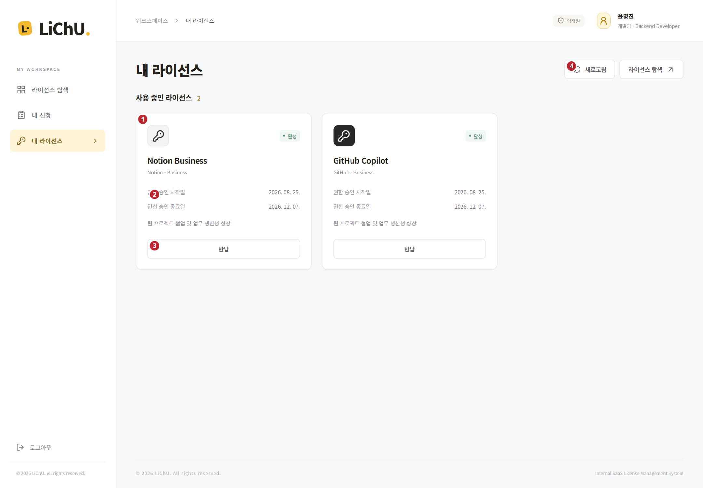
실제 실행 화면 · 빨간 번호는 다음 페이지의 디스크립션 NO와 대응
| NO | UI 요소명 | 관련 요구사항 ID | 인터랙션 및 로직 / 이동 | 호출 API |
|---|---|---|---|---|
| 1 | 사용 중 라이선스 카드 | REQ-FUNC-008 | 본인의 ACTIVE 할당만. SaaS 이름·공급사·플랜·상태·사용 목적 표시. 이동: 현 화면 | GET /api/license-assignments/me |
| 2 | 권한 승인 기간 | REQ-FUNC-008 | valid_from/valid_until 표시. 신청 목적은 원본 request에서 조회. request가 없으면 직접 배정 안내. 이동: 현 화면 | - |
| 3 | 반납 | REQ-FUNC-009 | 선택한 할당의 반납 확인 모달을 연다. 이동: SCR-MYLIC-002 | - |
| 4 | 새로고침 / 라이선스 탐색 | REQ-FUNC-008 | 새로고침은 재조회. 탐색은 라이선스 목록으로 이동. 이동: SCR-MYLIC-001 / SCR-LIC-001 | GET /api/license-assignments/me |
| 상태 | 처리 |
|---|---|
| 정상 | 내 라이선스 → 본인 ACTIVE 할당 조회 → 기간·목적 확인 → 반납 → SCR-MYLIC-002. 탐색 링크 → SCR-LIC-001. |
| 로딩 / 중복 클릭 | 목록은 로딩 상태를 표시. 저장 처리 중 버튼을 비활성화한다. 필수 입력은 브라우저 기본 검증과 서버 검증을 함께 사용한다. |
| 빈 화면 | 목록의 빈 상태는 위 화면별 정책에 따른다. 입력 모달에서는 빈 데이터 대신 필수 입력 안내를 사용한다. |
| 네트워크 / 500 | 오류 문구를 표시하고 사용자가 재시도한다. 변경 API 실패 후에는 먼저 목록에서 반영 여부를 확인한다. |
| 400 / 401 / 403 / 404 / 409 / 422 | 화면별 적용 코드는 위 정책 및 API 명세 참조. 입력 형식은 422, 잘못된 상태 전이는 400으로 구분한다. |
AC-01 RETURNED/REVOKED 할당은 표시하지 않는다.
AC-02 관리자가 변경한 승인 기간이 재조회 시 반영된다.
AC-03 반납 전 확인 모달을 거친다.
license_assignments.user_id/status/valid_from/valid_until/request_id; licenses; license_requests.reason
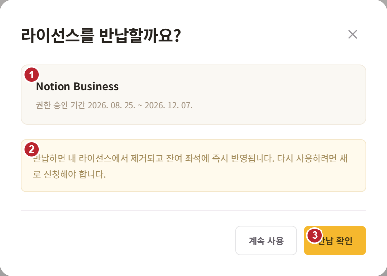
실제 실행 화면 · 빨간 번호는 다음 페이지의 디스크립션 NO와 대응
| NO | UI 요소명 | 관련 요구사항 ID | 인터랙션 및 로직 / 이동 | 호출 API |
|---|---|---|---|---|
| 1 | 반납 대상 / 승인 기간 | REQ-FUNC-009 | 선택 라이선스 및 권한 승인 기간을 확인한다. 이동: 현 모달 | - |
| 2 | 반납 안내 | REQ-FUNC-009 | 내 라이선스에서 제거되고 잔여 좌석에 반영됨. 재사용하려면 새 신청. 이동: 현 모달 | - |
| 3 | 반납 확인 | REQ-FUNC-009 | 본인 ACTIVE → RETURNED. 수행자·시각과 사용자 직접 반납 사유 저장. 이동: SCR-MYLIC-001 | POST /api/license-assignments/{assignment_id}/return |
| 상태 | 처리 |
|---|---|
| 정상 | SCR-MYLIC-001 반납 → 대상·기간 확인 → 반납 확인(200) → 모달 닫힘·내 라이선스 갱신. 계속 사용은 취소. |
| 로딩 / 중복 클릭 | 목록은 로딩 상태를 표시. 저장 처리 중 버튼을 비활성화한다. 필수 입력은 브라우저 기본 검증과 서버 검증을 함께 사용한다. |
| 빈 화면 | 목록의 빈 상태는 위 화면별 정책에 따른다. 입력 모달에서는 빈 데이터 대신 필수 입력 안내를 사용한다. |
| 네트워크 / 500 | 오류 문구를 표시하고 사용자가 재시도한다. 변경 API 실패 후에는 먼저 목록에서 반영 여부를 확인한다. |
| 400 / 401 / 403 / 404 / 409 / 422 | 화면별 적용 코드는 위 정책 및 API 명세 참조. 입력 형식은 422, 잘못된 상태 전이는 400으로 구분한다. |
AC-01 계속 사용을 선택하면 할당이 유지된다.
AC-02 반납 완료 후 본인 목록에서 사라지고 잔여 좌석이 증가한다.
AC-03 같은 할당을 두 번 반납할 수 없다.
license_assignments.status/ended_by/ended_at/end_reason; ACTIVE 집계 감소
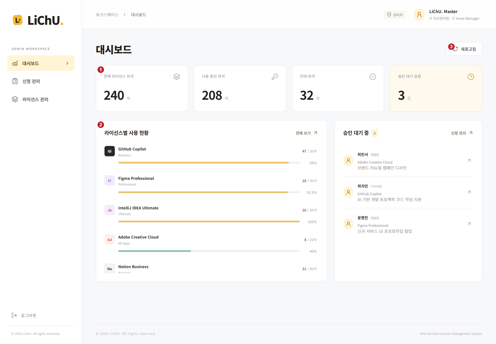
실제 실행 화면 · 빨간 번호는 다음 페이지의 디스크립션 NO와 대응
| NO | UI 요소명 | 관련 요구사항 ID | 인터랙션 및 로직 / 이동 | 호출 API |
|---|---|---|---|---|
| 1 | 현황 지표 | REQ-FUNC-010 | 전체/사용 중/잔여 좌석, 승인 대기 요청 수. 사용량은 ACTIVE 할당 COUNT. 비활성 라이선스도 총 좌석에 포함. 이동: 현 화면 | GET /api/admin/dashboard |
| 2 | 라이선스 현황 / 승인 대기 | REQ-FUNC-010 | 좌석·사용률 및 최근 대기 최대 5건. 양쪽 패널은 같은 높이로 각각 스크롤. 전체 보기·신청 관리로 이동. 이동: SCR-ADM-003 / SCR-ADM-002 | - |
| 3 | 새로고침 | REQ-FUNC-010 | 집계 재조회. 창 복귀·30초 자동 갱신. 이동: 현 화면 | GET /api/admin/dashboard |
| 상태 | 처리 |
|---|---|
| 정상 | MASTER 로그인 → 대시보드 집계 → 라이선스 전체 보기: SCR-ADM-003 / 신청 관리·대기 행 클릭: SCR-ADM-002. |
| 로딩 / 중복 클릭 | 목록은 로딩 상태를 표시. 저장 처리 중 버튼을 비활성화한다. 필수 입력은 브라우저 기본 검증과 서버 검증을 함께 사용한다. |
| 빈 화면 | 목록의 빈 상태는 위 화면별 정책에 따른다. 입력 모달에서는 빈 데이터 대신 필수 입력 안내를 사용한다. |
| 네트워크 / 500 | 오류 문구를 표시하고 사용자가 재시도한다. 변경 API 실패 후에는 먼저 목록에서 반영 여부를 확인한다. |
| 400 / 401 / 403 / 404 / 409 / 422 | 화면별 적용 코드는 위 정책 및 API 명세 참조. 입력 형식은 422, 잘못된 상태 전이는 400으로 구분한다. |
AC-01 사용 좌석은 실제 ACTIVE 할당 수와 일치한다.
AC-02 승인·반납·회수 후 재조회 시 집계가 갱신된다.
AC-03 대기 수 전체와 최대 5건 미리보기를 구분한다.
licenses.total_seats/status; license_assignments.status; license_requests.status/created_at; users
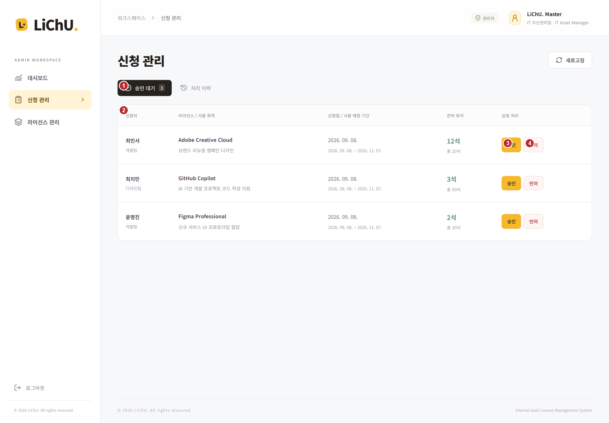
실제 실행 화면 · 빨간 번호는 다음 페이지의 디스크립션 NO와 대응
| NO | UI 요소명 | 관련 요구사항 ID | 인터랙션 및 로직 / 이동 | 호출 API |
|---|---|---|---|---|
| 1 | 승인 대기 / 처리 이력 탭 | REQ-FUNC-011, REQ-FUNC-014 | 대기는 PENDING만, 이력은 APPROVED/REJECTED만. 탭 변경 시 페이지를 1로 초기화. 이동: SCR-ADM-002 / SCR-ADM-004 | GET /api/admin/license-requests |
| 2 | 대기 요청 표 | REQ-FUNC-011 | 신청자·부서·SaaS·목적·신청일·예정 기간·잔여 좌석. 10건 단위 화면 페이지 이동. 이동: 현 화면 | - |
| 3 | 승인 | REQ-FUNC-012 | 잔여 0석 또는 INACTIVE는 버튼 비활성화. 가능하면 사유 입력 모달. 이동: SCR-ADM-007 | - |
| 4 | 반려 | REQ-FUNC-013 | 선택 신청의 반려 사유 입력 모달. 이동: SCR-ADM-008 | - |
| 상태 | 처리 |
|---|---|
| 정상 | 신청 관리 → 승인 대기 탭 → PENDING 목록 → 승인: SCR-ADM-007 / 반려: SCR-ADM-008. 처리 이력 탭 → SCR-ADM-004. |
| 로딩 / 중복 클릭 | 목록은 로딩 상태를 표시. 저장 처리 중 버튼을 비활성화한다. 필수 입력은 브라우저 기본 검증과 서버 검증을 함께 사용한다. |
| 빈 화면 | 목록의 빈 상태는 위 화면별 정책에 따른다. 입력 모달에서는 빈 데이터 대신 필수 입력 안내를 사용한다. |
| 네트워크 / 500 | 오류 문구를 표시하고 사용자가 재시도한다. 변경 API 실패 후에는 먼저 목록에서 반영 여부를 확인한다. |
| 400 / 401 / 403 / 404 / 409 / 422 | 화면별 적용 코드는 위 정책 및 API 명세 참조. 입력 형식은 422, 잘못된 상태 전이는 400으로 구분한다. |
AC-01 처리 완료 건은 대기 목록에서 제거된다.
AC-02 잔여 0석 또는 비활성 라이선스는 승인 버튼이 비활성이다.
AC-03 사용 예정 기간과 신청자 부서를 확인할 수 있다.
license_requests.status=PENDING/start_date/end_date; users.name/department_id; licenses; ACTIVE 집계
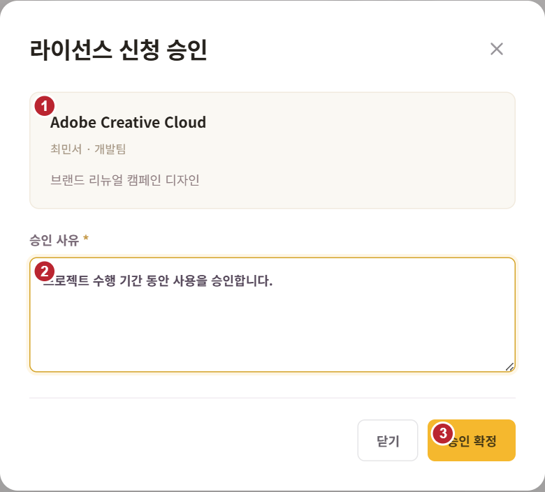
실제 실행 화면 · 빨간 번호는 다음 페이지의 디스크립션 NO와 대응
| NO | UI 요소명 | 관련 요구사항 ID | 인터랙션 및 로직 / 이동 | 호출 API |
|---|---|---|---|---|
| 1 | 승인 대상 | REQ-FUNC-012 | 신청 SaaS·신청자·부서·사용 목적을 확인한다. 이동: 현 모달 | - |
| 2 | 승인 사유 | REQ-FUNC-012 | 필수 1~4000자, 앞뒤 공백 제거. Placeholder: 신청자가 확인할 수 있도록 처리 사유를 입력해주세요. 이동: 현 모달 | - |
| 3 | 승인 확정 | REQ-FUNC-012 | 처리자·시각·사유 저장. 신청 기간을 valid_from/valid_until으로 복사한 할당을 생성한다. 이동: SCR-ADM-002 | POST /api/admin/license-requests/{request_id}/approve |
| 상태 | 처리 |
|---|---|
| 정상 | SCR-ADM-002 승인 → 사유 입력 → 서버 상태/좌석 재검증 → APPROVED 및 ACTIVE 할당을 한 트랜잭션으로 생성 → 대기 재조회. |
| 로딩 / 중복 클릭 | 목록은 로딩 상태를 표시. 저장 처리 중 버튼을 비활성화한다. 필수 입력은 브라우저 기본 검증과 서버 검증을 함께 사용한다. |
| 빈 화면 | 목록의 빈 상태는 위 화면별 정책에 따른다. 입력 모달에서는 빈 데이터 대신 필수 입력 안내를 사용한다. |
| 네트워크 / 500 | 오류 문구를 표시하고 사용자가 재시도한다. 변경 API 실패 후에는 먼저 목록에서 반영 여부를 확인한다. |
| 400 / 401 / 403 / 404 / 409 / 422 | 화면별 적용 코드는 위 정책 및 API 명세 참조. 입력 형식은 422, 잘못된 상태 전이는 400으로 구분한다. |
AC-01 빈 사유로 승인할 수 없다.
AC-02 마지막 1석에 대해 초과 승인되지 않도록 서버에서 잠금·검증한다.
AC-03 승인 성공 시 요청 결과와 할당이 함께 저장된다.
license_requests.status/decision_reason/processed_by/processed_at/start_date/end_date; license_assignments.user_id/license_id/request_id/status/assigned_by/assigned_at/valid_from/valid_until
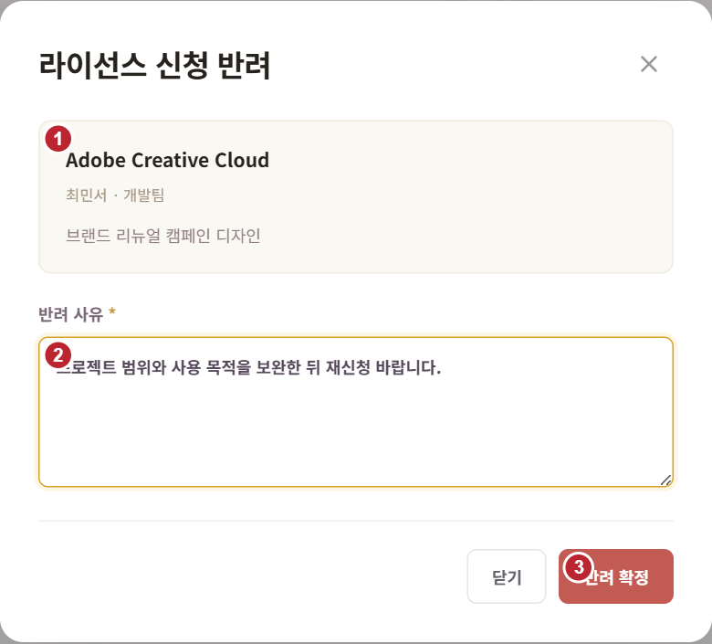
실제 실행 화면 · 빨간 번호는 다음 페이지의 디스크립션 NO와 대응
| NO | UI 요소명 | 관련 요구사항 ID | 인터랙션 및 로직 / 이동 | 호출 API |
|---|---|---|---|---|
| 1 | 반려 대상 | REQ-FUNC-013 | SaaS·신청자·부서·사용 목적 표시. 이동: 현 모달 | - |
| 2 | 반려 사유 | REQ-FUNC-013 | 필수 1~4000자. 신청자가 확인할 구체적인 사유 입력. 이동: 현 모달 | - |
| 3 | 반려 확정 | REQ-FUNC-013 | PENDING만 REJECTED로 변경. 사유·처리자·처리일 저장. 할당 생성 없음. 이동: SCR-ADM-002 | POST /api/admin/license-requests/{request_id}/reject |
| 상태 | 처리 |
|---|---|
| 정상 | SCR-ADM-002 반려 → 사유 입력 → REJECTED 저장 → 대기에서 제외. SCR-ADM-004와 신청자의 SCR-REQ-001에서 결과 확인. |
| 로딩 / 중복 클릭 | 목록은 로딩 상태를 표시. 저장 처리 중 버튼을 비활성화한다. 필수 입력은 브라우저 기본 검증과 서버 검증을 함께 사용한다. |
| 빈 화면 | 목록의 빈 상태는 위 화면별 정책에 따른다. 입력 모달에서는 빈 데이터 대신 필수 입력 안내를 사용한다. |
| 네트워크 / 500 | 오류 문구를 표시하고 사용자가 재시도한다. 변경 API 실패 후에는 먼저 목록에서 반영 여부를 확인한다. |
| 400 / 401 / 403 / 404 / 409 / 422 | 화면별 적용 코드는 위 정책 및 API 명세 참조. 입력 형식은 422, 잘못된 상태 전이는 400으로 구분한다. |
AC-01 사유 없이 반려할 수 없다.
AC-02 반려해도 라이선스 사용 좌석 수는 증가하지 않는다.
AC-03 신청자의 내 신청에 같은 반려 사유가 나타난다.
license_requests.status/decision_reason/processed_by/processed_at
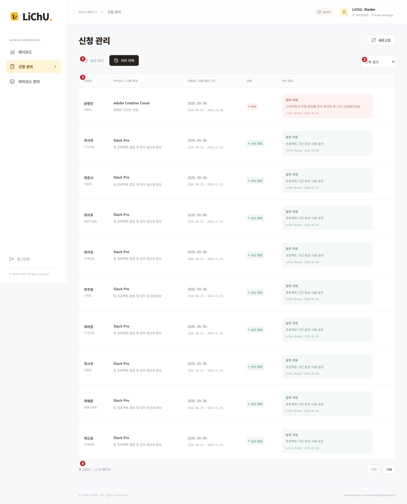
실제 실행 화면 · 빨간 번호는 다음 페이지의 디스크립션 NO와 대응
| NO | UI 요소명 | 관련 요구사항 ID | 인터랙션 및 로직 / 이동 | 호출 API |
|---|---|---|---|---|
| 1 | 처리 이력 탭 | REQ-FUNC-014 | APPROVED/REJECTED만 표시. CANCELED는 관리자 처리 이력에서 제외. 이동: 현 화면 | GET /api/admin/license-requests/history |
| 2 | 처리 결과 필터 | REQ-FUNC-014 | 전체 결과 / 승인 / 반려. 승인·반려 선택 시 status 쿼리 전달. 이동: 현 화면 | GET /api/admin/license-requests/history?status=APPROVED 또는 REJECTED |
| 3 | 처리 이력 표 | REQ-FUNC-014 | 신청자·부서·SaaS·목적·신청/예정 기간·결과·사유·처리자·처리일. 이동: 현 화면 | - |
| 4 | 페이지 이동 | REQ-FUNC-014 | 한 페이지 10건. 이전/다음은 클라이언트 처리이며 끝 페이지 버튼 비활성. 이동: 현 화면 | - |
| 상태 | 처리 |
|---|---|
| 정상 | SCR-ADM-002 처리 이력 탭 → 승인·반려 결과 조회 → 결과 필터 변경 → 목록 재조회. 승인 대기로 돌아가면 SCR-ADM-002. |
| 로딩 / 중복 클릭 | 목록은 로딩 상태를 표시. 저장 처리 중 버튼을 비활성화한다. 필수 입력은 브라우저 기본 검증과 서버 검증을 함께 사용한다. |
| 빈 화면 | 목록의 빈 상태는 위 화면별 정책에 따른다. 입력 모달에서는 빈 데이터 대신 필수 입력 안내를 사용한다. |
| 네트워크 / 500 | 오류 문구를 표시하고 사용자가 재시도한다. 변경 API 실패 후에는 먼저 목록에서 반영 여부를 확인한다. |
| 400 / 401 / 403 / 404 / 409 / 422 | 화면별 적용 코드는 위 정책 및 API 명세 참조. 입력 형식은 422, 잘못된 상태 전이는 400으로 구분한다. |
AC-01 승인 필터에 반려·취소 건이 나타나지 않는다.
AC-02 반려 필터에서 사유와 처리자를 확인할 수 있다.
AC-03 필터 변경 시 첫 페이지로 이동한다.
license_requests.status/decision_reason/processed_by/processed_at; users; licenses
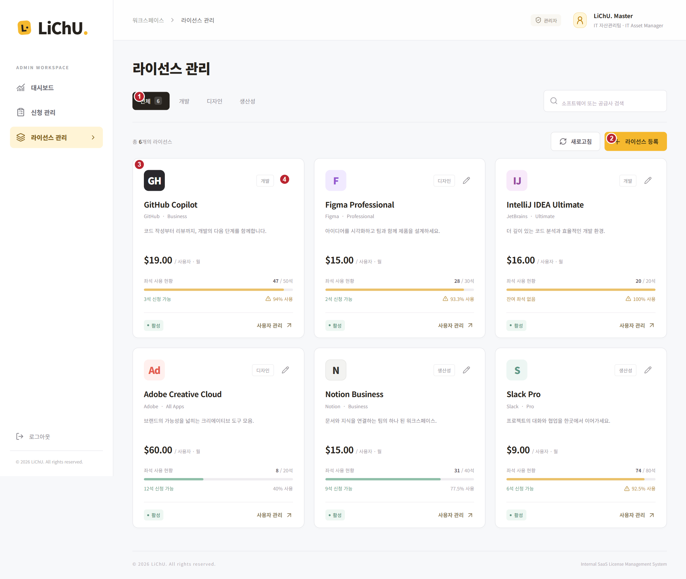
실제 실행 화면 · 빨간 번호는 다음 페이지의 디스크립션 NO와 대응
| NO | UI 요소명 | 관련 요구사항 ID | 인터랙션 및 로직 / 이동 | 호출 API |
|---|---|---|---|---|
| 1 | 검색 / 분류 | REQ-FUNC-015 | 이름·공급사 검색 및 분류 필터를 클라이언트에서 적용. 이동: 현 화면 | GET /api/admin/licenses (최초/갱신) |
| 2 | 라이선스 등록 | REQ-FUNC-016 | 기본값이 있는 빈 등록 모달을 연다. 이동: SCR-ADM-005 (등록) | - |
| 3 | 라이선스 카드 / 사용자 관리 | REQ-FUNC-015, REQ-FUNC-018 | 단가·좌석·사용률·활성 상태. 카드 클릭 또는 사용자 관리 선택 시 ACTIVE 사용자 목록. 이동: SCR-ADM-006 | GET /api/admin/licenses/{license_id}/assignments |
| 4 | 수정 아이콘 | REQ-FUNC-017 | 해당 라이선스 정보를 채운 수정 모달. 카드의 사용자 관리 클릭과 분리. 이동: SCR-ADM-005 (수정) | - |
| 상태 | 처리 |
|---|---|
| 정상 | 라이선스 관리 → 검색/분류 → 등록·수정: SCR-ADM-005 / 카드·사용자 관리: SCR-ADM-006. |
| 로딩 / 중복 클릭 | 목록은 로딩 상태를 표시. 저장 처리 중 버튼을 비활성화한다. 필수 입력은 브라우저 기본 검증과 서버 검증을 함께 사용한다. |
| 빈 화면 | 목록의 빈 상태는 위 화면별 정책에 따른다. 입력 모달에서는 빈 데이터 대신 필수 입력 안내를 사용한다. |
| 네트워크 / 500 | 오류 문구를 표시하고 사용자가 재시도한다. 변경 API 실패 후에는 먼저 목록에서 반영 여부를 확인한다. |
| 400 / 401 / 403 / 404 / 409 / 422 | 화면별 적용 코드는 위 정책 및 API 명세 참조. 입력 형식은 422, 잘못된 상태 전이는 400으로 구분한다. |
AC-01 비활성 라이선스도 관리 목록에 나타난다.
AC-02 수정 아이콘 클릭은 사용자 목록 대신 수정 모달을 연다.
AC-03 연간 청구 라이선스는 월 환산액을 함께 표시한다.
licenses 전체 필드; license_assignments.status=ACTIVE 집계
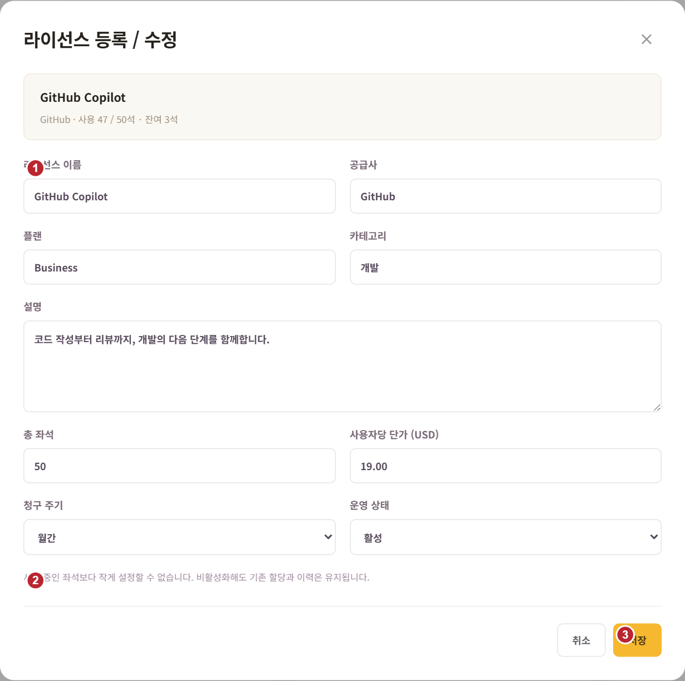
실제 실행 화면 · 빨간 번호는 다음 페이지의 디스크립션 NO와 대응
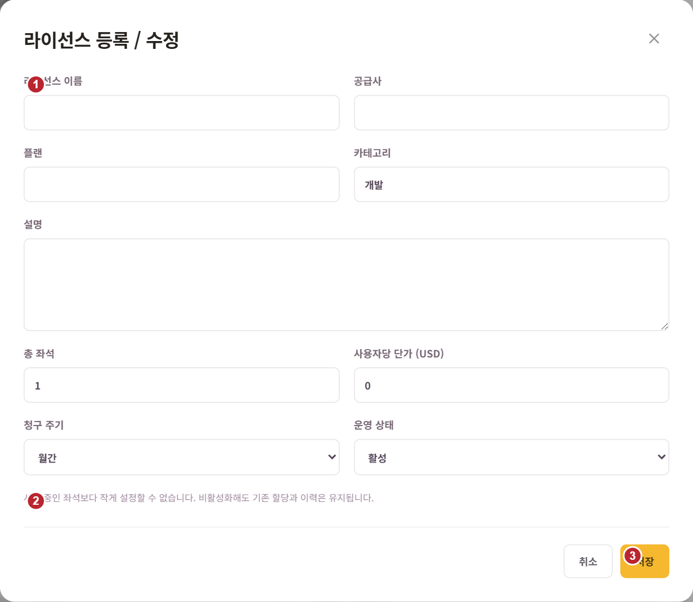
수정 모드와 동일한 번호·필드 구조. 생성 API만 POST로 달라진다.
| NO | UI 요소명 | 관련 요구사항 ID | 인터랙션 및 로직 / 이동 | 호출 API |
|---|---|---|---|---|
| 1 | 라이선스 정보 입력 | REQ-FUNC-016, REQ-FUNC-017 | 이름·공급사·플랜·분류·설명·총 좌석·단가·주기·상태. 좌석 0~1,000,000, 단가 USD 0 이상/소수2자리. 필수 문자열과 허용 enum 검사. 이동: 현 모달 | - |
| 2 | 수정 정책 안내 | REQ-FUNC-017 | 총 좌석은 ACTIVE 할당 수 이상이어야 함. 비활성화해도 기존 할당·이력을 유지. 이동: 현 모달 | - |
| 3 | 저장 | REQ-FUNC-016, REQ-FUNC-017 | 등록은 POST, 수정은 PATCH. UI는 전체 편집 필드를 보내며 API는 부분 수정 지원. PATCH 생략은 유지, 빈 객체/null은 거부. 이동: SCR-ADM-003 | POST /api/admin/licenses PATCH /api/admin/licenses/{license_id} |
| 상태 | 처리 |
|---|---|
| 정상 | SCR-ADM-003 등록/수정 → 필드 입력 → 저장 → 등록201 / 수정200 → 모달 닫힘·목록 재조회. 취소는 저장하지 않음. |
| 로딩 / 중복 클릭 | 목록은 로딩 상태를 표시. 저장 처리 중 버튼을 비활성화한다. 필수 입력은 브라우저 기본 검증과 서버 검증을 함께 사용한다. |
| 빈 화면 | 목록의 빈 상태는 위 화면별 정책에 따른다. 입력 모달에서는 빈 데이터 대신 필수 입력 안내를 사용한다. |
| 네트워크 / 500 | 오류 문구를 표시하고 사용자가 재시도한다. 변경 API 실패 후에는 먼저 목록에서 반영 여부를 확인한다. |
| 400 / 401 / 403 / 404 / 409 / 422 | 화면별 적용 코드는 위 정책 및 API 명세 참조. 입력 형식은 422, 잘못된 상태 전이는 400으로 구분한다. |
AC-01 총 좌석을 사용 중 좌석보다 적게 저장할 수 없다.
AC-02 INACTIVE 저장 후 신규 신청·승인만 차단되며 기존 할당은 유지된다.
AC-03 새로 등록한 라이선스가 목록에 나타난다.
licenses.name/vendor/plan_name/category/description/total_seats/unit_price/billing_cycle/status/created_at/updated_at / licenses 수정 필드/updated_at; license_assignments.status=ACTIVE 집계
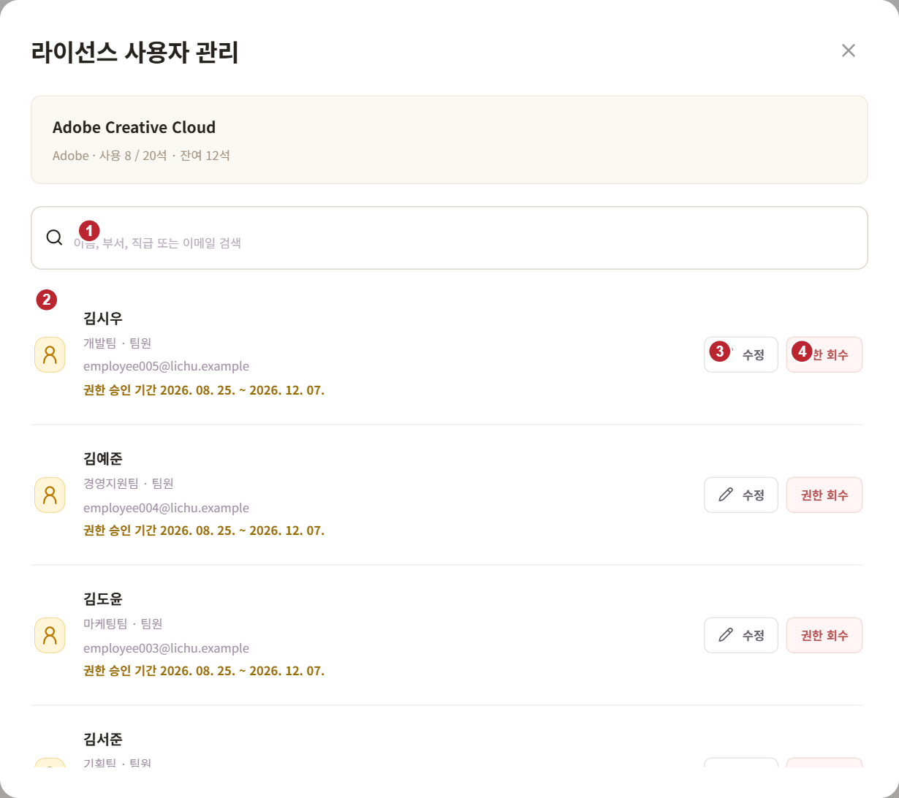
실제 실행 화면 · 빨간 번호는 다음 페이지의 디스크립션 NO와 대응
| NO | UI 요소명 | 관련 요구사항 ID | 인터랙션 및 로직 / 이동 | 호출 API |
|---|---|---|---|---|
| 1 | 직원 검색 | REQ-FUNC-018 | Placeholder: 이름, 부서, 직급 또는 이메일 검색. 네 항목 통합 부분 검색을 클라이언트 적용. 이동: 현 모달 | - |
| 2 | 할당 사용자 | REQ-FUNC-018 | ACTIVE만 조회. 이름·부서·직급·이메일·프로필·권한 승인 기간을 표시하며 목록 내부 스크롤. 이동: 현 모달 | GET /api/admin/licenses/{license_id}/assignments |
| 3 | 수정 | REQ-FUNC-021 | 선택 사용자 할당의 승인 기간 수정 모달. 이동: SCR-ADM-010 | - |
| 4 | 권한 회수 | REQ-FUNC-019 | 선택 사용자와 라이선스가 지정된 사유 입력 모달. 이동: SCR-ADM-009 | - |
| 상태 | 처리 |
|---|---|
| 정상 | SCR-ADM-003 카드 → 현재 사용자 모달 → 검색 → 수정: SCR-ADM-010 / 권한 회수: SCR-ADM-009. 닫기는 관리 목록으로. |
| 로딩 / 중복 클릭 | 목록은 로딩 상태를 표시. 저장 처리 중 버튼을 비활성화한다. 필수 입력은 브라우저 기본 검증과 서버 검증을 함께 사용한다. |
| 빈 화면 | 목록의 빈 상태는 위 화면별 정책에 따른다. 입력 모달에서는 빈 데이터 대신 필수 입력 안내를 사용한다. |
| 네트워크 / 500 | 오류 문구를 표시하고 사용자가 재시도한다. 변경 API 실패 후에는 먼저 목록에서 반영 여부를 확인한다. |
| 400 / 401 / 403 / 404 / 409 / 422 | 화면별 적용 코드는 위 정책 및 API 명세 참조. 입력 형식은 422, 잘못된 상태 전이는 400으로 구분한다. |
AC-01 종료된 할당은 사용자 목록에 보이지 않는다.
AC-02 이메일·부서로도 사용자를 찾을 수 있다.
AC-03 수정·회수 후 최신 사용자 목록으로 복귀한다.
license_assignments.status/valid_from/valid_until/request_id; users.name/department_id/job_title/email/profile_image; departments.name
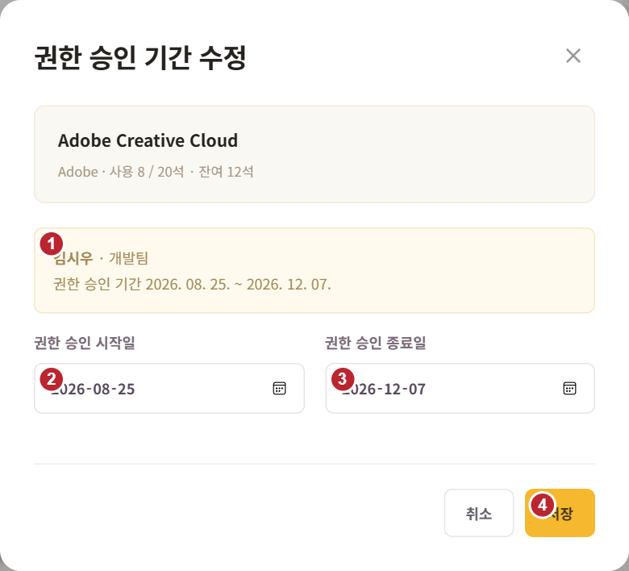
실제 실행 화면 · 빨간 번호는 다음 페이지의 디스크립션 NO와 대응
| NO | UI 요소명 | 관련 요구사항 ID | 인터랙션 및 로직 / 이동 | 호출 API |
|---|---|---|---|---|
| 1 | 사용자 및 현재 기간 | REQ-FUNC-021 | 선택 사용자·부서·현재 권한 승인 기간 확인. 이동: 현 모달 | - |
| 2 | 권한 승인 시작일 | REQ-FUNC-021 | 필수 날짜, 현재 valid_from으로 초기화. 이동: 현 모달 | - |
| 3 | 권한 승인 종료일 | REQ-FUNC-021 | 필수 날짜, 현재 valid_until으로 초기화. 시작일 이상. 이동: 현 모달 | - |
| 4 | 저장 | REQ-FUNC-021 | ACTIVE만 기간 수정. 원본 신청 예정 기간은 변경하지 않는다. 완료 시 사용자 목록 재조회. 이동: SCR-ADM-006 | PATCH /api/admin/license-assignments/{assignment_id} |
| 상태 | 처리 |
|---|---|
| 정상 | SCR-ADM-006 수정 → 현재 기간 확인 → 시작/종료일 변경 → PATCH200 → 사용자 목록 재조회·모달 복귀. 닫기는 라이선스 관리로. |
| 로딩 / 중복 클릭 | 목록은 로딩 상태를 표시. 저장 처리 중 버튼을 비활성화한다. 필수 입력은 브라우저 기본 검증과 서버 검증을 함께 사용한다. |
| 빈 화면 | 목록의 빈 상태는 위 화면별 정책에 따른다. 입력 모달에서는 빈 데이터 대신 필수 입력 안내를 사용한다. |
| 네트워크 / 500 | 오류 문구를 표시하고 사용자가 재시도한다. 변경 API 실패 후에는 먼저 목록에서 반영 여부를 확인한다. |
| 400 / 401 / 403 / 404 / 409 / 422 | 화면별 적용 코드는 위 정책 및 API 명세 참조. 입력 형식은 422, 잘못된 상태 전이는 400으로 구분한다. |
AC-01 시작일이 종료일 뒤면 저장되지 않는다.
AC-02 기간 저장 후 사용자 목록과 내 라이선스에 같은 승인 기간이 보인다.
AC-03 RETURNED/REVOKED 할당은 수정할 수 없다.
license_assignments.status/valid_from/valid_until
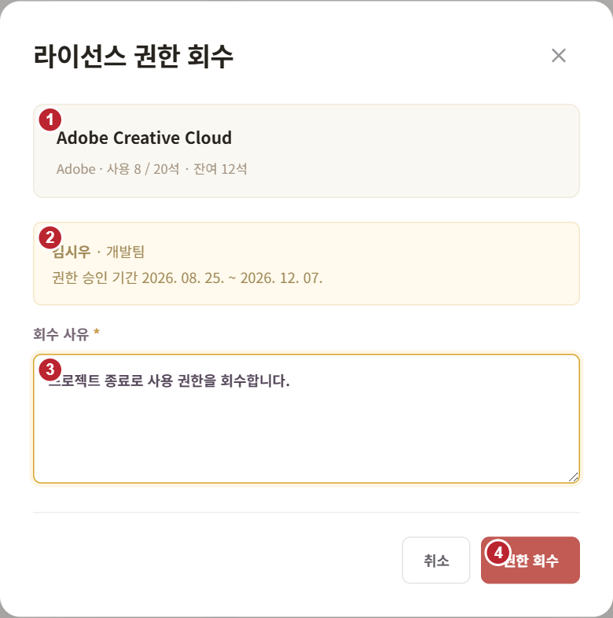
실제 실행 화면 · 빨간 번호는 다음 페이지의 디스크립션 NO와 대응
| NO | UI 요소명 | 관련 요구사항 ID | 인터랙션 및 로직 / 이동 | 호출 API |
|---|---|---|---|---|
| 1 | 라이선스 요약 | REQ-FUNC-019 | SaaS 이름과 현재 사용/잔여 좌석 확인. 이동: 현 모달 | - |
| 2 | 사용자 및 승인 기간 | REQ-FUNC-019 | 대상 사용자·부서·valid_from/valid_until 확인. 이동: 현 모달 | - |
| 3 | 회수 사유 | REQ-FUNC-019 | 필수 1~4000자. Placeholder: 회수 사유를 입력해주세요. 이동: 현 모달 | - |
| 4 | 권한 회수 | REQ-FUNC-019 | ACTIVE → REVOKED. ended_by/ended_at/end_reason을 저장하고 목록 재조회. 이동: SCR-ADM-006 | POST /api/admin/license-assignments/{assignment_id}/revoke |
| 상태 | 처리 |
|---|---|
| 정상 | SCR-ADM-006 권한 회수 → 대상·기간 확인 → 사유 입력 → REVOKED 저장 → 최신 사용자 목록으로 복귀. 닫기는 관리 화면으로. |
| 로딩 / 중복 클릭 | 목록은 로딩 상태를 표시. 저장 처리 중 버튼을 비활성화한다. 필수 입력은 브라우저 기본 검증과 서버 검증을 함께 사용한다. |
| 빈 화면 | 목록의 빈 상태는 위 화면별 정책에 따른다. 입력 모달에서는 빈 데이터 대신 필수 입력 안내를 사용한다. |
| 네트워크 / 500 | 오류 문구를 표시하고 사용자가 재시도한다. 변경 API 실패 후에는 먼저 목록에서 반영 여부를 확인한다. |
| 400 / 401 / 403 / 404 / 409 / 422 | 화면별 적용 코드는 위 정책 및 API 명세 참조. 입력 형식은 422, 잘못된 상태 전이는 400으로 구분한다. |
AC-01 회수 사유 없이 확정할 수 없다.
AC-02 회수 성공 후 사용자 목록 및 대상자의 내 라이선스에서 제외된다.
AC-03 할당 행은 REVOKED와 종료 정보로 보존된다.
license_assignments.status/valid_from/valid_until/ended_by/ended_at/end_reason; ACTIVE 집계 감소
| 상태 | 사용자 화면 | API / 데이터 |
|---|---|---|
| 정상 | 성공 안내 후 대상 목록 또는 사용자 정보 갱신. | 조회·수정 200 / 생성 201 |
| 형식/필수 입력 | HTML required/min/max 등으로 1차 검증. 서버 오류는 화면 상단 또는 모달, 회원가입은 필드 하단도 표시. | 422 VALIDATION_ERROR / INVALID_DEPARTMENT |
| 업무 상태 오류 | 이미 처리된 요청·종료된 할당·비활성 라이선스 안내. | 400 INVALID_TRANSITION / LICENSE_INACTIVE |
| 미인증/만료 | 토큰 제거 후 로그인 및 만료 안내. 로그인 자격 실패는 현재 폼에 오류. | 401 UNAUTHORIZED / INVALID_CREDENTIALS |
| 권한/소유권 | 역할별 메뉴·Route Guard 및 서버 역할/소유권 검사. | 403 FORBIDDEN / NOT_OWNER |
| 대상 없음 | 없는 단일 라이선스·신청·할당 오류. 빈 목록과 구분. | 404 NOT_FOUND |
| 중복·좌석·동시 충돌 | 오류 표시 후 최신 목록 재조회. 승인·신청 등 재판단. | 409 DUPLICATE_USER / ALREADY_ASSIGNED / DUPLICATE_REQUEST / LICENSE_SEAT_FULL / SEATS_BELOW_USAGE / CONFLICT |
| 빈 목록 | 검색 결과 없음·대기 없음·할당 없음 등 문맥에 맞는 안내. | 200 및 빈 배열 / 집계 0 |
| 로딩 | ResourceState의 로딩 표시. 변경 요청 busy 동안 중복 제출 제한. | 요청 완료 후 상태 해제 |
| 네트워크 실패 | 연결 오류 표시. 목록은 재시도, 폼은 입력 보존 후 다시 제출. | HTTP 응답이 없을 수 있음 |
| 서버 오류 | 목록·모달 오류를 표시. 완료 여부 확인 후 수동 재시도. | 500 INTERNAL_ERROR |
주요 목록은 창 복귀와 화면이 보이는 동안 30초 주기로 재조회한다. 실시간 WebSocket은 사용하지 않는다. 승인은 즉시 ACTIVE 할당을 생성하고, 승인 종료일 도달에 따른 자동 회수는 하지 않는다. 반납·회수는 별도 확정 동작이다.
외부 SaaS 계정 발급·실제 사용량 측정·SSO·결제·알림·다단계 승인·자동 대기열은 포함하지 않는다. API나 화면이 없는 기능을 문서에 추가하지 않았다.
기존 요구사항 정의서의 ID를 그대로 사용하며, 전체 21개 기능 요구사항이 20개 화면 ID로 연결된다.
| 요구사항 ID | 화면 ID | 호출 API | DB 데이터 |
|---|---|---|---|
| REQ-FUNC-001 | SCR-SIGNUP-001 | GET /api/departments POST /api/auth/signup | departments.id/name; users.employee_no/name/department_id/job_title/email/username/password_hash/profile_image/role |
| REQ-FUNC-002 | SCR-AUTH-001 | POST /api/auth/login GET /api/auth/me | users.username/password_hash/role; users.department_id → departments.id |
| REQ-FUNC-003 | SCR-COMMON-001 | GET /api/auth/me | users.name/job_title/role/department_id; departments.name (로그아웃은 DB 변경 없음) |
| REQ-FUNC-020 | SCR-COMMON-002 | PATCH /api/auth/me GET /api/departments | users.name/department_id/job_title/email/profile_image/updated_at; departments.id |
| REQ-FUNC-004 | SCR-LIC-001 | GET /api/licenses | licenses 전체 정보; license_assignments.status=ACTIVE 집계; license_requests.status=PENDING |
| REQ-FUNC-005 | SCR-LIC-002 | GET /api/licenses/{license_id} POST /api/license-requests | license_requests.user_id/license_id/reason/start_date/end_date/status/created_at; licenses; license_assignments |
| REQ-FUNC-006 | SCR-REQ-001 | GET /api/license-requests/me | license_requests 상태/기간/목적/decision_reason/processed_by/processed_at; users; licenses |
| REQ-FUNC-007 | SCR-REQ-002 | POST /api/license-requests/{request_id}/cancel | license_requests.user_id/status/canceled_at |
| REQ-FUNC-008 | SCR-MYLIC-001 | GET /api/license-assignments/me | license_assignments.user_id/status/valid_from/valid_until/request_id; licenses; license_requests.reason |
| REQ-FUNC-009 | SCR-MYLIC-002 | POST /api/license-assignments/{assignment_id}/return | license_assignments.status/ended_by/ended_at/end_reason; ACTIVE 집계 감소 |
기존 요구사항 정의서의 ID를 그대로 사용하며, 전체 21개 기능 요구사항이 20개 화면 ID로 연결된다.
| 요구사항 ID | 화면 ID | 호출 API | DB 데이터 |
|---|---|---|---|
| REQ-FUNC-010 | SCR-ADM-001 | GET /api/admin/dashboard | licenses.total_seats/status; license_assignments.status; license_requests.status/created_at; users |
| REQ-FUNC-011 | SCR-ADM-002 | GET /api/admin/license-requests | license_requests.status=PENDING/start_date/end_date; users.name/department_id; licenses; ACTIVE 집계 |
| REQ-FUNC-012 | SCR-ADM-007 | POST /api/admin/license-requests/{request_id}/approve | license_requests.status/decision_reason/processed_by/processed_at/start_date/end_date; license_assignments.user_id/license_id/request_id/status/assigned_by/assigned_at/valid_from/valid_until |
| REQ-FUNC-013 | SCR-ADM-008 | POST /api/admin/license-requests/{request_id}/reject | license_requests.status/decision_reason/processed_by/processed_at |
| REQ-FUNC-014 | SCR-ADM-004 | GET /api/admin/license-requests/history | license_requests.status/decision_reason/processed_by/processed_at; users; licenses |
| REQ-FUNC-015 | SCR-ADM-003 | GET /api/admin/licenses | licenses 전체 필드; license_assignments.status=ACTIVE 집계 |
| REQ-FUNC-016 | SCR-ADM-005 | POST /api/admin/licenses | licenses.name/vendor/plan_name/category/description/total_seats/unit_price/billing_cycle/status/created_at/updated_at |
| REQ-FUNC-017 | SCR-ADM-005 | PATCH /api/admin/licenses/{license_id} | licenses 수정 필드/updated_at; license_assignments.status=ACTIVE 집계 |
| REQ-FUNC-018 | SCR-ADM-006 | GET /api/admin/licenses/{license_id}/assignments | license_assignments.status/valid_from/valid_until/request_id; users.name/department_id/job_title/email/profile_image; departments.name |
| REQ-FUNC-021 | SCR-ADM-010 | PATCH /api/admin/license-assignments/{assignment_id} | license_assignments.status/valid_from/valid_until |
기존 요구사항 정의서의 ID를 그대로 사용하며, 전체 21개 기능 요구사항이 20개 화면 ID로 연결된다.
| 요구사항 ID | 화면 ID | 호출 API | DB 데이터 |
|---|---|---|---|
| REQ-FUNC-019 | SCR-ADM-009 | POST /api/admin/license-assignments/{assignment_id}/revoke | license_assignments.status/valid_from/valid_until/ended_by/ended_at/end_reason; ACTIVE 집계 감소 |